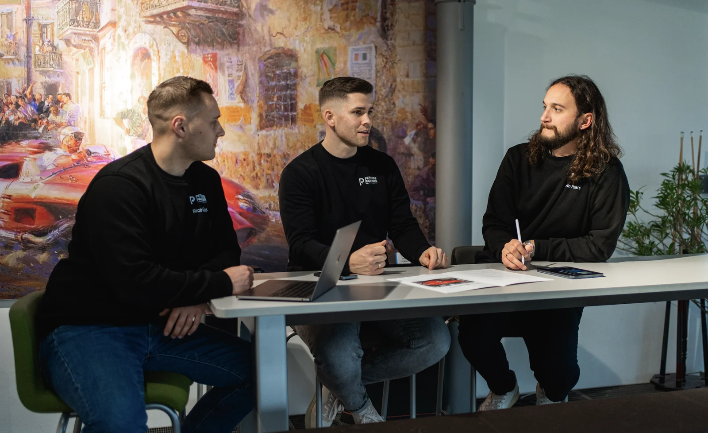
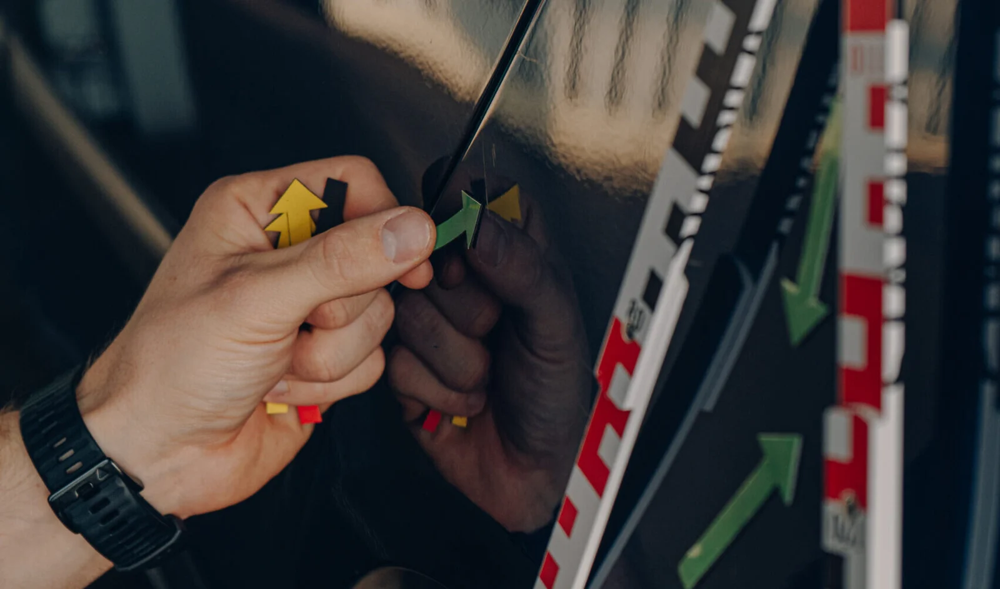
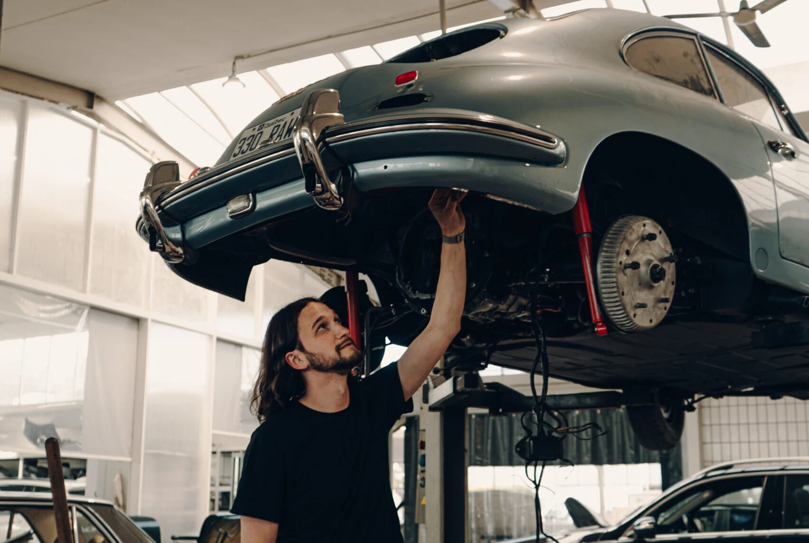
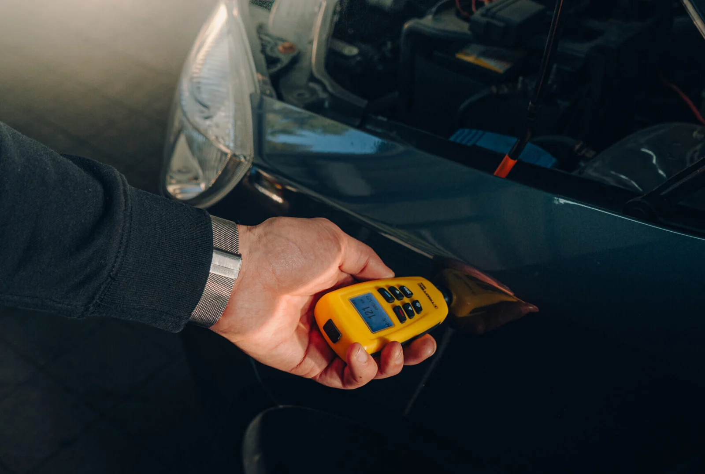
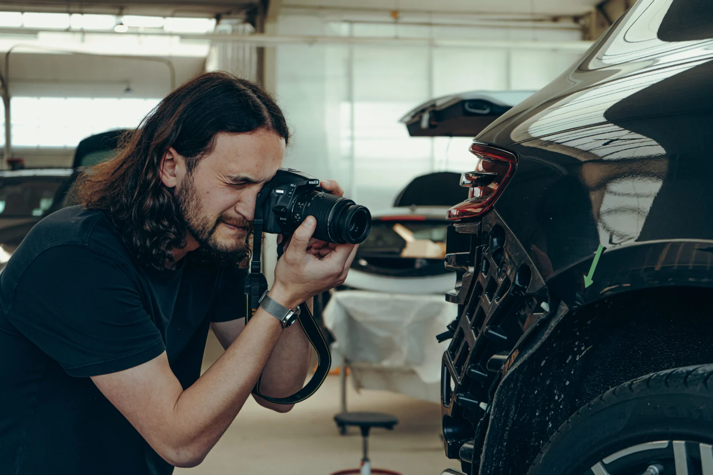
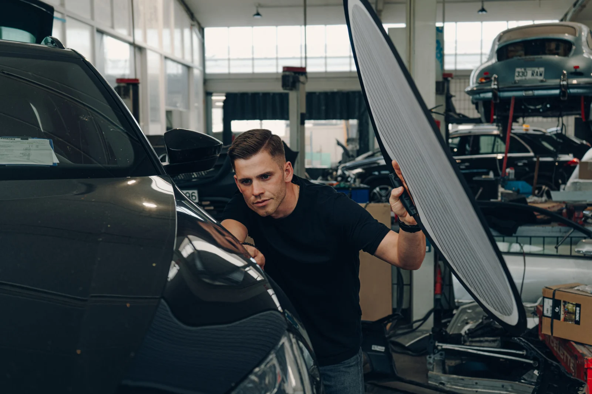
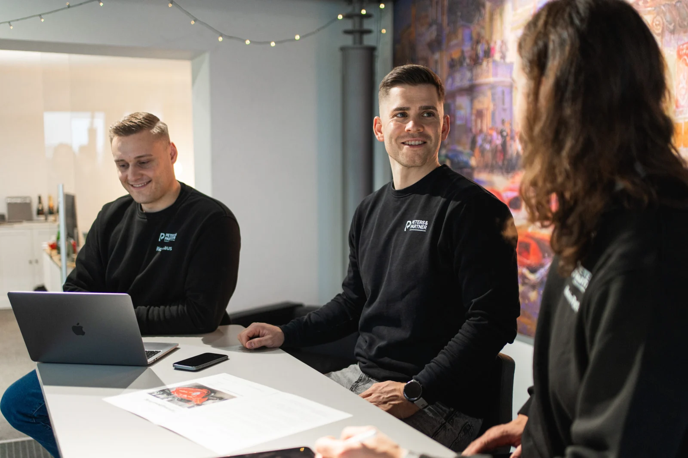
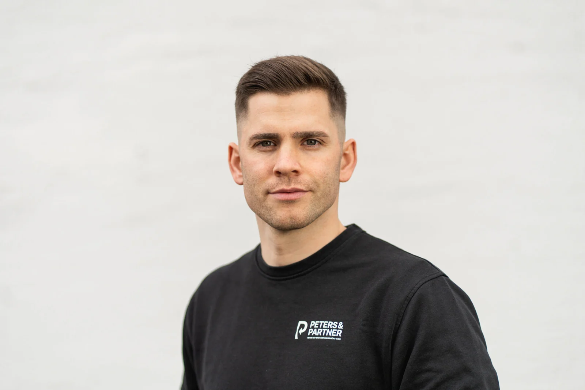
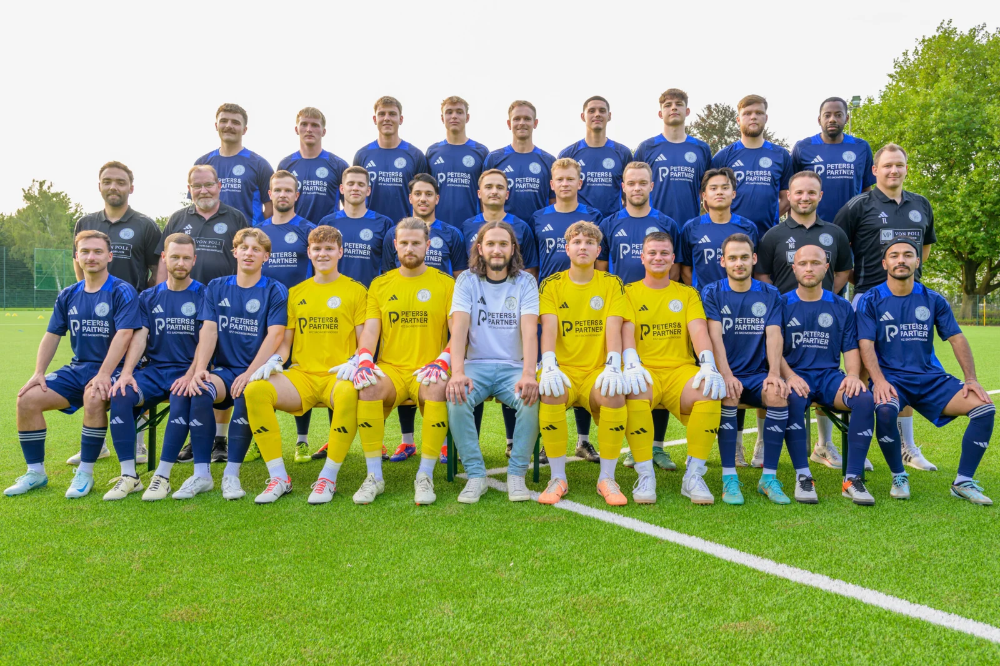

Wir erstellen dein Gutachten und begleiten dich persönlich bei der Abwicklung. Bei Bedarf vermitteln wir Kontakte zu Anwalt, Werkstatt und Ersatzwagen.Dein Gutachten und Hilfe bei der Abwicklung. Ein Team an deiner Seite.
Gutachten. Abwicklung. Mobil bleiben.Ein Team an deiner Seite.
5,0 Sterne208 bei GoogleUnabhängigeBegutachtungSeit 2019Peters & PartnerLippe & OWLBei dir vor Ort
Die Kostenfrage zuerst
Wer bezahlt mein Gutachten?
Bei einem unverschuldeten Haftpflichtschaden übernimmt grundsätzlich die gegnerische Versicherung die erforderlichen Gutachterkosten. Bei Bagatellschäden, Teilschuld oder Kaskofällen ist die Kostenübernahme gesondert zu klären.
Der Unfall reicht als Stress. Wir halten dir den Rücken frei.
Gutachter finden, mit der Werkstatt sprechen, die nächsten Schritte klären: Nach einem Unfall kommt schnell viel zusammen. Wir helfen dir, den Überblick zu behalten und die passenden Schritte zu organisieren.
Dein Schaden. Fachgerecht dokumentiert.Wir erstellen ein unabhängiges Gutachten als Grundlage für die weitere Regulierung.
Dein Fall. Persönlich begleitet.Wir unterstützen dich bei der Abwicklung, stimmen nächste Schritte ab und halten dich auf dem Laufenden.
Dein Alltag. Wieder im Blick.Bei Bedarf unterstützen wir mit Kontakten zu Anwalt, Werkstatt und Ersatzmobilität.

Persönlich besprechen. Gemeinsam Klarheit schaffen.
Was wir für dich tun
Das passende Gutachten für deinen Fall.
Vom Unfall über die Fahrzeugbewertung bis zum kleineren Schaden: Wir sagen dir, welche Einschätzung sinnvoll ist.

Nach dem Unfall
Unfallgutachten
Wir dokumentieren deinen Unfallschaden und begleiten dich bei den nächsten Schritten der Abwicklung. Mit passenden Kontakten zu Anwalt, Werkstatt und Ersatzmobilität.
Wir erfassen Schäden, kalkulieren Reparaturkosten und beurteilen unter anderem Wiederbeschaffungswert, Restwert, Wertminderung und Reparaturdauer. Das Gutachten unterstützt die Beweissicherung und weitere Schadenbearbeitung.
Bei einem unverschuldeten Haftpflichtschaden können erforderliche Gutachterkosten grundsätzlich vom Schädiger beziehungsweise dessen Versicherung zu tragen sein. Haftung, Schadenumfang und Erforderlichkeit werden im Einzelfall betrachtet.

Fahrzeugbewertung
Wertgutachten
Für Oldtimer, besonders gepflegte Fahrzeuge oder andere Werte, die über dem üblichen Markt liegen.
Ob Oldtimer, Youngtimer, Motorrad oder Alltagsfahrzeug: Zustand, Ausstattung und Marktumfeld fließen in die Bewertung ein. Das kann beim Verkauf, bei der Versicherung oder bei einer Übernahme aus dem Firmenvermögen helfen.
Gerade bei gepflegten oder seltenen Fahrzeugen lohnt sich eine nachvollziehbare Dokumentation. Bei Wertveränderungen sollte die Bewertung aktualisiert werden.

Reparaturkosten
Kostenvoranschlag
Eine klare Reparaturkosten-Einschätzung bei kleineren Schäden – auch wenn dein Fahrzeug abseits der Straße beschädigt wurde.
Bei kleineren Schäden kalkulieren wir die voraussichtlichen Reparaturkosten und dokumentieren die erforderlichen Arbeiten und Ersatzteile.
Auch Schäden abseits des Straßenverkehrs gehören dazu – beispielsweise durch einen Stein, einen herabgefallenen Gegenstand oder ein Fahrrad. Wir besprechen, welche Dokumentation zum konkreten Fall passt.
Ein Blick in unsere Arbeit
Wir schauen hin. Bis ins Detail.
Am Fahrzeug, bei der Dokumentation und im Gespräch: Sorgfalt steckt in jedem Schritt.

Den Schaden genau festhalten.

Technik sorgfältig untersuchen.

Die nächsten Schritte erklären.
Bild 1 von 3
So nehmen wir dir Arbeit ab
Ein Anruf setzt alles in Bewegung.
Du schilderst uns, was passiert ist. Wir kümmern uns um die Begutachtung und unterstützen dich bei der weiteren Organisation – Schritt für Schritt, mit einem Team an deiner Seite.
SCHRITT 01
Du erzählst. Wir hören zu.
Ein Anruf reicht für den Anfang. Wir klären deine ersten Fragen, besprechen die Situation und stimmen die Begutachtung mit dir ab.
SCHRITT 02
Wir machen den Schaden greifbar.
Wir untersuchen dein Fahrzeug und erstellen ein unabhängiges Gutachten. Du erfährst verständlich, was beschädigt ist und wie es weitergehen kann.
SCHRITT 03
Wir bleiben an deiner Seite.
Wir begleiten die nächsten Schritte und unterstützen bei der Abstimmung mit passenden Partnern – vom Anwalt bis zur Ersatzmobilität. Damit du dich wieder auf deinen Alltag konzentrieren kannst.
Unterstützung, die zusammenpasst
Du hast einen Kontakt. Wir haben das Netzwerk.
Anwalt, Werkstatt oder Ersatzwagen: Wir helfen dir, die passenden Ansprechpartner zu finden und die nächsten Schritte abzustimmen. Du behältst ein Team an deiner Seite.
Rechtsanwälte
Wir vermitteln dir auf Wunsch einen Anwaltspartner, der die rechtliche Seite deines Schadenfalls übernimmt.
Werkstätten
Wir stimmen Begutachtung und technische Fragen mit der Werkstatt ab. So greifen Gutachten und weitere Schritte ineinander.
Abschleppdienste
Unterstützung organisieren, wenn dein Fahrzeug nicht weiterfahren kann.
Fahrzeugvermieter
Wir unterstützen dich bei Fragen zur Ersatzmobilität und vermitteln bei Bedarf den passenden Kontakt.
Google-Bewertungen, veröffentlicht auf der Website von Peters & Partner. Originalauszüge und gekennzeichnete Kurzfassungen. Neun veröffentlichte Kundenstimmen · Stand: 26.11.2026.
Kundenfall · Wohnwagen
Vom Schaden zur Auszahlung.
Dietrich B berichtet, wie das Team den Schaden an seinem Wohnwagen begleitet hat.
ca. 4–5 Wochen
Gesamtablauf laut Kundenbericht
Freitag
Kontakt aufgenommen.
Dietrich meldet die Beule an seinem Wohnwagen und fragt ein Gutachten an.
Montag
Schaden aufgenommen.
Die Begutachtung findet am folgenden Montag statt.
Noch in derselben Woche
Gutachten erhalten.
Die fertige Dokumentation liegt vor.
Gesamtablauf ca. 4–5 Wochen
Auszahlung erfolgt.
Mit der empfohlenen Kanzlei folgen Kostenübernahme und Auszahlung.
Die Menschen hinter dem Gutachten
Dein Fall. Unser Team.
Du sprichst direkt mit den Menschen, die sich dein Fahrzeug ansehen und deinen Fall begleiten.
Gründete Peters & Partner 2019. Berufserfahrung in der Kfz-Branche seit 2010 und Dozent für Kfz-Technik bei der Handwerkskammer OWL.
Mehr über Kevin
Ausbildung zum Kfz-Mechatroniker in einem VAG-Autohaus. Meisterprüfung 2017, anschließend Weiterbildung zum Sachverständigen und Schadengutachter. Sein Fokus: ein verlässlicher Kontakt und verständliche Ergebnisse.

Geprüfter Kfz-Sachverständiger
Chris Petkau
Bringt langjährige Erfahrung aus der Automobilbranche und Einsätze bei der Berufsfeuerwehr mit.
Mehr über Chris
Prüfung zum Kfz-Sachverständigen 2020. Seine Erfahrung aus der Fahrzeugtechnik und der Berufsfeuerwehr hilft ihm, Unfallgeschehen und technische Zusammenhänge einzuordnen.
Verbindet fundiertes Wissen aus der Fahrzeugtechnik mit sorgfältiger, nachvollziehbarer Bewertung.
Mehr über Rico
Ausgebildeter Kfz-Mechatroniker und Kfz-Technikermeister mit anschließender Weiterbildung zum Sachverständigen. Seit 2025 im Team. Sein Anspruch: fachliche Genauigkeit und transparente Bewertungen.

Verwurzelt in Lippe
Aus der Region. Für die Region.
Lippe kennt man am besten persönlich.
Peters & Partner unterstützt Vereine und Projekte vor Ort – und ist mit einem festen Bürostandort in Lage nah an den Menschen in Lippe.
Kein passendes Thema gefunden. Ruf uns gern persönlich an.
Darf ich Gutachter und Werkstatt selbst auswählen?
Bei einem Haftpflichtschaden kannst du grundsätzlich einen unabhängigen Sachverständigen und deine Werkstatt wählen. Bei Kaskoschäden können vertragliche Vorgaben gelten.
Wer bezahlt das Gutachten?
Bei voller Haftung des Unfallgegners sind erforderliche Gutachterkosten grundsätzlich Teil des ersatzfähigen Schadens. Bei kleinen Schäden oder geteilter Haftung muss die Kostenfrage gesondert betrachtet werden. Wir besprechen das vor der Beauftragung.
Gutachten oder Kostenvoranschlag?
Ein Gutachten bewertet den Schaden umfassender und kann zusätzliche Werte wie Restwert oder Wertminderung enthalten. Für kleinere Schäden kann ein Kostenvoranschlag ausreichen. Eine starre Grenze ersetzt keine Einschätzung.
Was bedeutet fiktive Abrechnung?
Dabei wird der Schaden auf Grundlage einer Kalkulation reguliert, ohne dass eine Reparaturrechnung vorgelegt wird. Welche Positionen erstattungsfähig sind und ob Abzüge gelten, hängt vom Fall ab.
Was passiert bei einem Totalschaden?
Wir unterscheiden zwischen technischer Reparierbarkeit und wirtschaftlicher Bewertung. Reparaturkosten, Wiederbeschaffungswert und Restwert sind wichtige Grundlagen. Unter bestimmten Voraussetzungen kann eine Reparatur im Rahmen der sogenannten 130-Prozent-Regel möglich sein.
Kann ich mir den Schaden auszahlen lassen?
Eine Auszahlung kann je nach Fall möglich sein. Bei einer Abrechnung auf Totalschadenbasis spielen Wiederbeschaffungswert und Restwert eine Rolle. Umsatzsteuer wird grundsätzlich nur berücksichtigt, soweit sie tatsächlich angefallen ist.
Muss ich Reparaturkosten vorstrecken?
Eine Reparaturkosten-Übernahme oder eine Abtretung kann eine direkte Zahlung an die Werkstatt ermöglichen. Ob das möglich und sinnvoll ist, stimmen Werkstatt, Versicherung und gegebenenfalls Rechtsanwalt ab.
Was gilt bei einem selbst verschuldeten Unfall?
Bei einem Kaskoschaden gelten die Bedingungen deines Versicherungsvertrags. Melde den Schaden deiner Versicherung und beachte deren Vorgaben, bevor du Leistungen beauftragst.
Was ist ein Bagatellschaden?
Ein kleiner äußerlicher Schaden kann verdeckte Folgen haben. Ob ein Kostenvoranschlag ausreicht oder eine weitergehende Untersuchung sinnvoll ist, lässt sich nicht allein am sichtbaren Kratzer festmachen.
Mietwagen oder Nutzungsausfall?
Wenn dein Fahrzeug unfallbedingt nicht nutzbar ist, können unter bestimmten Voraussetzungen Mietwagenkosten oder eine Nutzungsausfallentschädigung infrage kommen. Bedarf, Ausfalldauer, Fahrzeugklasse und weitere Umstände sind entscheidend.
Was ist eine Wertminderung?
Ein repariertes Unfallfahrzeug kann am Markt weniger wert sein als ein vergleichbares unfallfreies Fahrzeug. Eine mögliche merkantile Wertminderung wird anhand des konkreten Fahrzeugs und Schadens beurteilt.
Brauche ich eine Rechtsschutzversicherung für einen Anwalt?
Du kannst auch ohne Rechtsschutzversicherung einen Rechtsanwalt beauftragen. Ob die gegnerische Versicherung die erforderlichen Kosten tragen muss, richtet sich insbesondere nach der Haftung.
An wen wende ich mich bei Verletzungen und Schmerzensgeld?
Lass Beschwerden ärztlich abklären und dokumentieren. Juristische Ansprüche, etwa Schmerzensgeld oder einen Haushaltsführungsschaden, sollte eine Rechtsanwaltskanzlei prüfen.
Wann ist eine Fahrzeugbewertung sinnvoll?
Zum Beispiel vor einem Verkauf, bei besonderen Fahrzeugwerten, für Versicherungszwecke oder bei einer Übernahme aus dem Betriebsvermögen. Oldtimer, Motorräder und gepflegte Alltagsfahrzeuge können bewertet werden.
Was sollte ich für den ersten Kontakt bereithalten?
Eine kurze Beschreibung, Fahrzeugdaten und vorhandene Fotos helfen. Wenn dir noch Unterlagen fehlen, kannst du trotzdem anrufen. Wir besprechen, was wir für deinen Fall brauchen.
Der erste Schritt ist ein Anruf.
Du hattest den Unfall. Jetzt sind wir dran.
Schilder uns kurz, was passiert ist. Wir klären deine Fragen, besprechen die Begutachtung und unterstützen dich bei den nächsten Schritten.